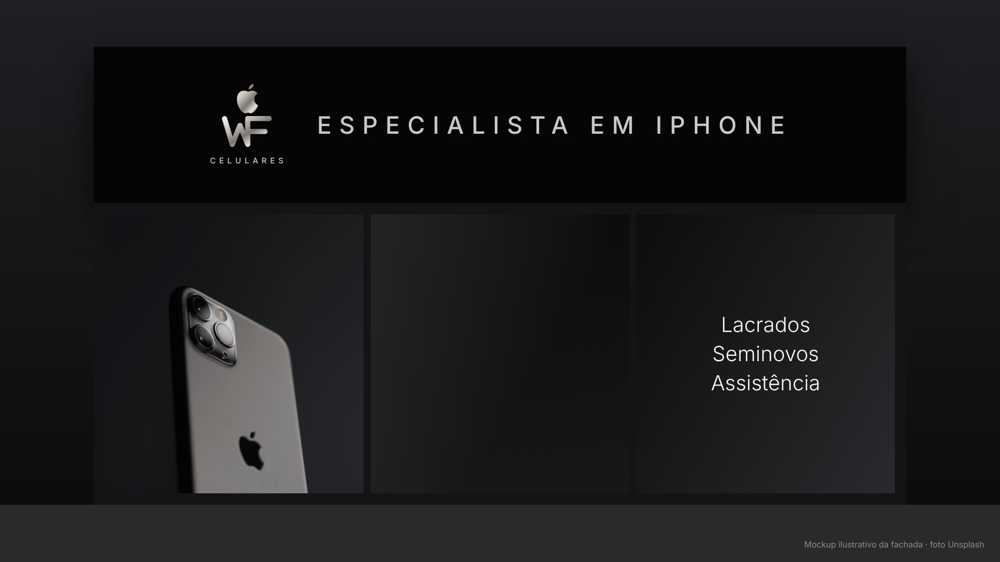

@lindsonalmeida_ · case WF Celulares
1/5
Mesma loja.
Outra marca.
 Antes
Antes
Rebranding da WF Celulares, loja de iPhone em São Luís. Toca pra ver como foi →
@lindsonalmeida_ · case WF Celulares
2/5
O produto era bom.
A marca não contava isso.
01
Logo com efeito 3D
bonito de perto, mas some no tamanho do celular
02
Foto de perfil com promoção
o cliente via o preço, não a loja
03
@ difícil de digitar
quem ouvia o nome não achava o perfil
04
Nada mostrava a garantia
e quem compra seminovo quer ter certeza
@lindsonalmeida_ · case WF Celulares
3/5
Celular com
procedência.
A marca de sempre, mais limpa e moderna. E uma ideia que vende: todo iPhone sai com laudo, garantia e nota.
TestadoBateria medidaGarantia
@lindsonalmeida_ · case WF Celulares
4/5
Do perfil
à fachada.



Logo, manual de 22 páginas, 9 artes, destaques e fachada.
@lindsonalmeida_ · case WF Celulares
5/5
Sua loja vende bem,
mas a marca
não mostra isso?
Eu monto a marca, o perfil e as artes da sua loja, do jeito que eu fiz pra WF.
Quer isso na sua loja?
Me chama no direct
@lindsonalmeida_
Lindson Almeida · São Luís